Create Freight Auctions 40% Faster on Taabi Procurement
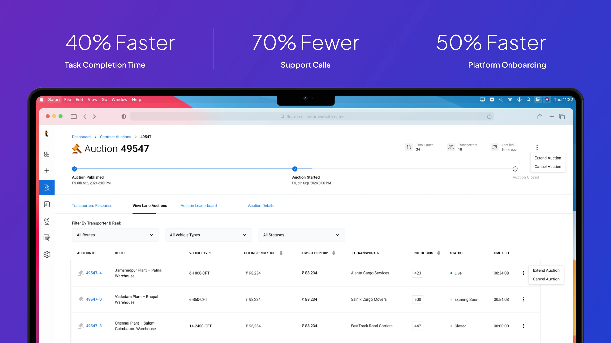
Product Overview
The product enables procurement managers to source multiple transporters for yearly tender contracts through competitive auctions.
Procurement managers can configure lanes, select bidders, define auction rules, and set up the auction before launching it.
Problem Statement
Freight procurement is a highly operational process where procurement managers configure and run auctions to secure competitive transportation rates.
The auction platform had already been deployed to customers, with training and handoff completed 2–3 months earlier. However, post-launch usage revealed a significant usability problem: users were still struggling to independently create auctions.
Despite training, we saw:
- High volume of support calls and tickets
- Significant form abandonment
- High error and correction rates
- Difficulty understanding what each step required
The issue was no longer whether users knew the procurement process.
It was whether the product itself was clear enough to help them complete the process independently.
The challenge
How might we simplify a complex auction creation workflow so procurement managers can complete it confidently, with fewer errors and less dependence on support?
Outcome 🚩
The project focused on redesigning the auction creation flow, optimizing it for clarity and speed so procurement managers could configure and launch auctions with less effort and fewer errors.
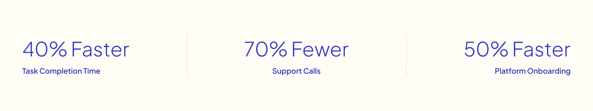
Alright, Let’s Figure Out the Problems in the Current Form
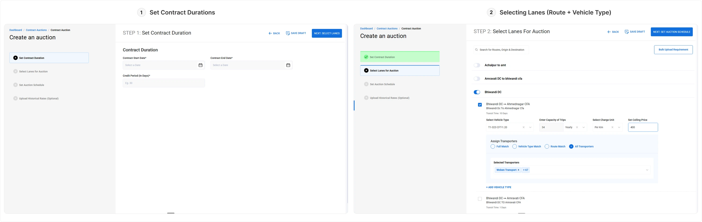
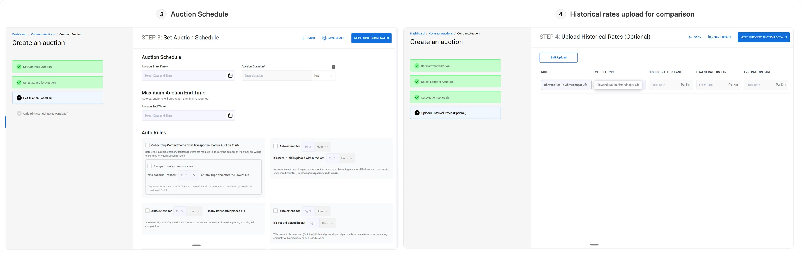
User Research & Form UI Evaluation
- We conducted task observation session, gave our user dummy data to create an auction
- We documented all the critical blockers they customers were raising over support calls
- We did full form workflow evaluation of, how many text fields need to be filled by the user, how many can be fetched, autofilled or be prefilled,
- How does effort and clarity of action per step looks like
We mapped out all the user understanding gaps in a single excel sheet from support calls and task observation sessions
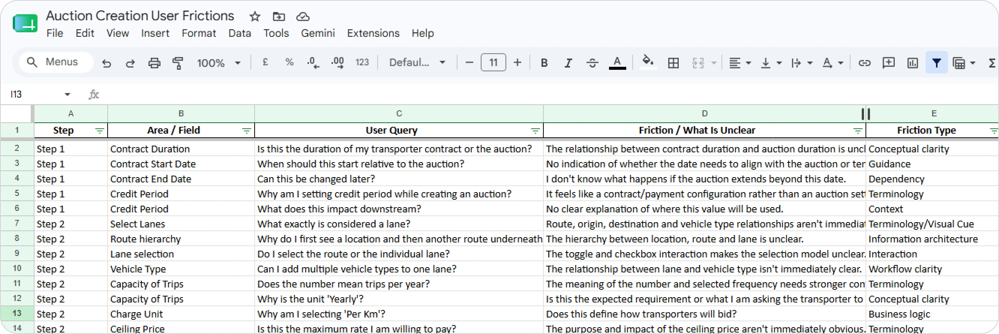
✨ Key Insights Identified from the Research
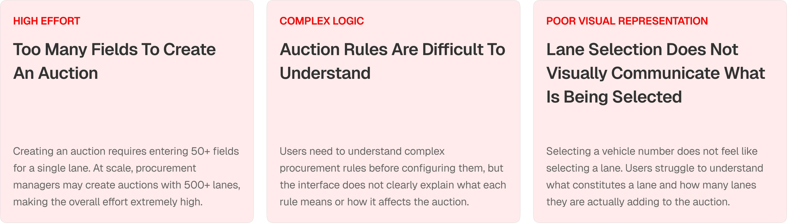
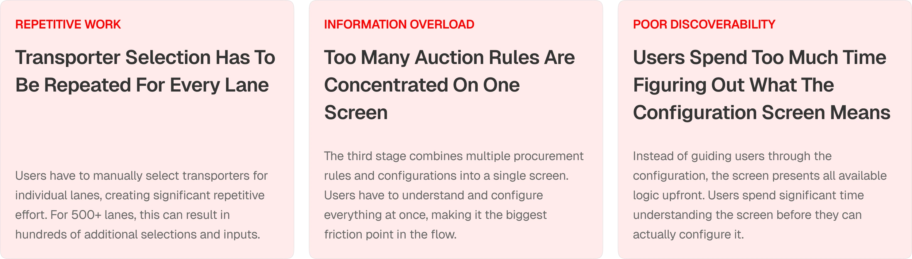
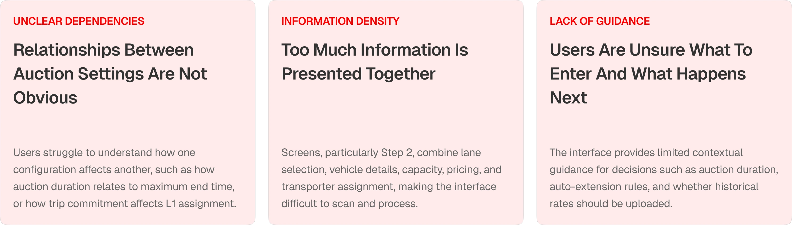
Designing for Different Auction-Creation Archetypes
Each archetype has a different job to accomplish, so the form should adapt to their needs rather than expose the same workflow to everyone.
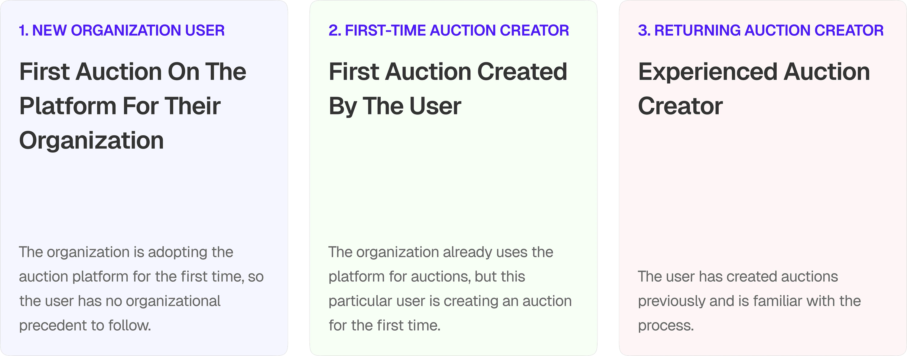
The Historical Freight Rates step highlights why these archetypes matter. It was originally added as a client requirement to compare previous and new freight rates. However, once an organisation has completed its first auction for a lane, this step becomes largely redundant for subsequent users.
Our goal was to progressively reduce friction as users gained experience, while maintaining clarity at every step, ultimately making auction creation faster and more intuitive for experienced users.
Jobs to be done by each Archetype
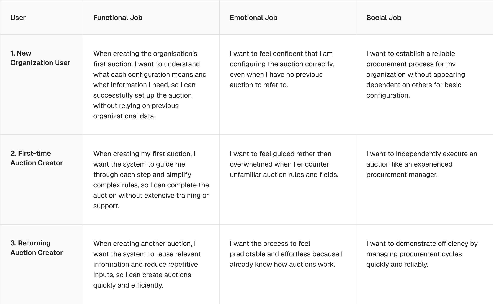
✨ Now Let’s dive into all the decisions I took to improve overall experience
Form no. of steps
- Decrease the number of critical decisions per step by dividing critical decisions smaller step
- Creating a Dynamic logic for Historical Data Step for each user archetype.
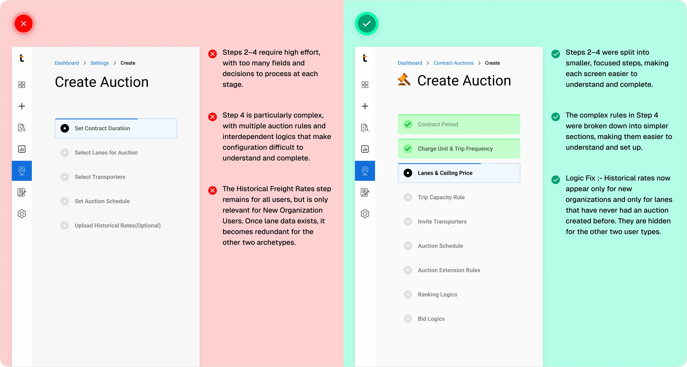
Updating the Transporter Selection Logic
Transporter selection was a major point of friction. Users had to select transporters for each lane individually, while the existing lane, route, and vehicle matching logic was too rigid and did not reflect how procurement managers actually made their selections.
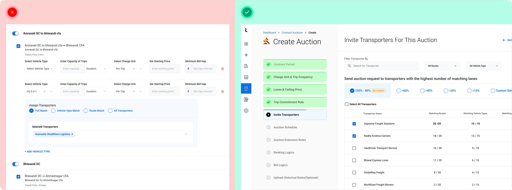
We introduced a smarter selection process that assigns each transporter a matching percentage based on routes and vehicle requirements. This helped users quickly identify the best matches while still giving them the flexibility to invite transporters outside the recommended range.
Making Every Field Easier to Understand
Many users did not understand what certain fields meant or how their input would affect the auction.
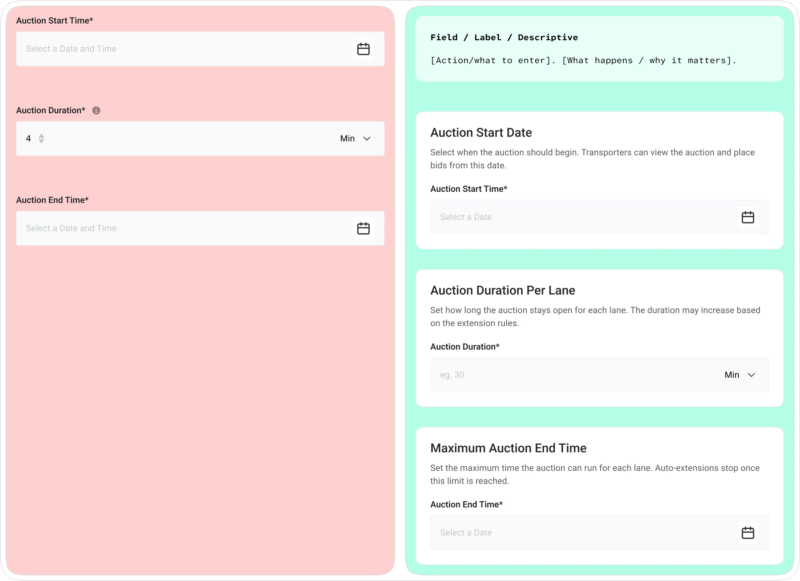
I redesigned fields with clearer labels and supporting explanations, supported by reusable content tokens for complex terms and configurations. The goal was simple: the form should educate users as they complete it.
Adding more clarity into the auction duration and auction extension rules and explicitly telling user for how much time auction will run
Originally, we had a somewhat complex logic for setting up the auction duration. Users first had to set the auction start time and then define how long the auction would run. This duration acted as the base duration, after which the auction extension rules would apply. However, the auction could not continue indefinitely, as there was also a limit on how long it could be extended.
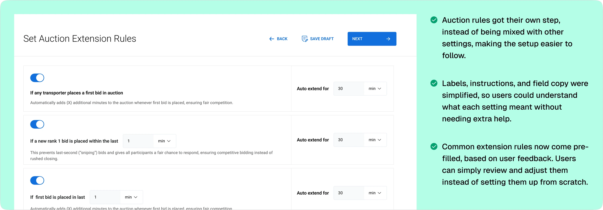
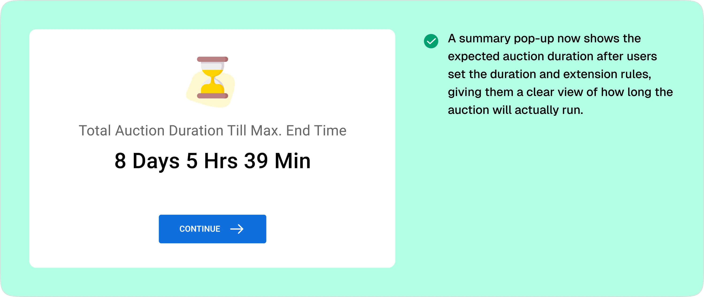
Redesigning the selecting lanes screen for better representation of a lane and bulk upload flows for faster lane selection
Lanes are at the core of every freight auction. I redesigned the selection experience to make lane information easier to scan and manage, while improving the bulk upload flow to help users add large numbers of lanes faster.
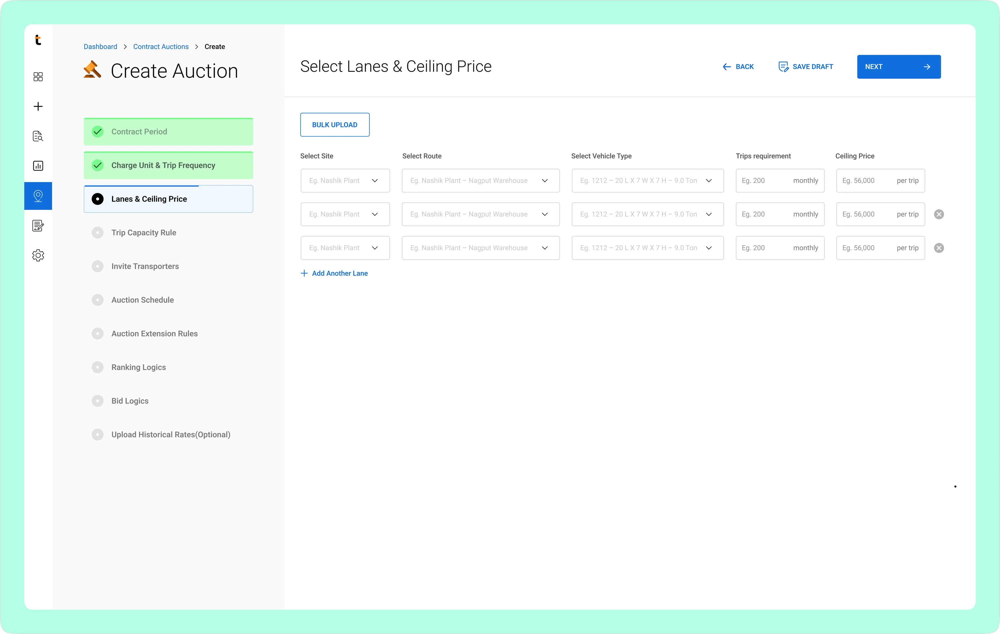
Hiding Complexity Until It Was Needed
The auction flow included several advanced configurations, such as trip commitment, ranking, and bidding rules. Using progressive disclosure, I kept the default experience simple while making advanced settings available only when needed.
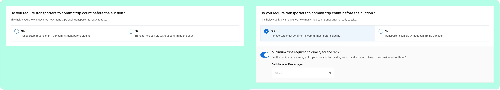
Creating Continuity Between Publishing and Managing
The original published screen felt disconnected from the actual bidding experience. I redesigned it to closely resemble how lanes would appear during bidding, creating a smoother transition between creating, publishing, and managing an auction.
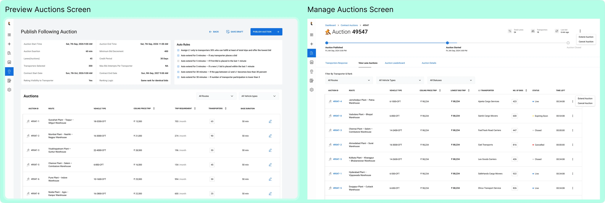
Final Prototype
Success Metrics to Track for This Form
I am no longer associated with this project, but if I were continuing to work on it, these are the metrics I would track to measure the success of this redesign.
- Form Abandonment RateOn lookout for numbers
- Average Auction Creation TimeReduced by 40%
- Form Error RateReduced dead and rage click in Microsoft Clarity
- Step-Level Drop-off RateLookout for number
- Independent Task Completion RateOn lookout for number
- Support Calls/Tickets Volume70% less form related queries for new customers compared to first
- Support Effort SavedBy a good margin
- Customer Adoption Rate
- Auction Completion Rate
Future Scope
There is still potential to reduce auction creation time even further.
A few ideas I would explore next:
- Duplicate an Existing Auction: Create a new auction by copying an existing one, including lanes, transporters, and configurations.
- Auction Templates: Create reusable templates based on zones, regions, or frequently used procurement setups.
- Saved Configurations: Allow teams to reuse commonly used rules and configurations.
- AI-Assisted Auction Creation: Use AI to populate lanes, suggest transporters, and configure auctions based on historical data.
- Smart Defaults: Automatically prefill settings based on previous auctions and organisational patterns.
And many more.
What I Learned
This project taught me that simplifying a complex experience does not always mean removing features; it means showing the right information at the right time, grouping decisions clearly, and helping users understand the impact of their actions.
My biggest learnings were:
- Training cannot permanently solve a confusing product experience.
- Different users need different levels of guidance.
- Complexity can be managed without removing flexibility.
- Reducing decision-making effort is more important than simply reducing the number of fields.
- Users should clearly understand the outcome of their configuration before they publish it.
The Biggest Takeaway
A complex workflow can still feel simple when users are guided through the right decisions at the right time.
Thanks for Reading!
Thank you for making it this far. I hope this case study gave you a clear look into my thinking, decisions, and approach to solving this problem.
I’m always open to feedback, ideas, and conversations, so feel free to share your thoughts.
Thanks for reading!